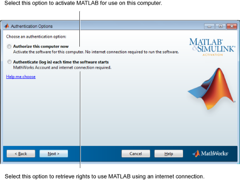

이 컴퓨터에서 사용할 수 있도록 MATLAB®을 활성화하려면 지금 이 컴퓨터 인증을 선택하십시오.
MATLAB 사용 권한을 부여하는 라이선스 파일이 컴퓨터에 저장됩니다.
MATLAB을 시작할 때마다 인터넷에 연결하여 라이선스 권한을 가져오려면 소프트웨어가 시작될 때마다 인증(로그인)을 선택하십시오.
이 옵션을 선택하는 경우 소프트웨어를 사용하는 동안 컴퓨터에서 인터넷을 통해 MathWorks®에 중단 없이 연결할 수 있어야 합니다. 라이선스 파일이 컴퓨터에 저장되지 않습니다.

다음을 클릭하여 계속합니다.